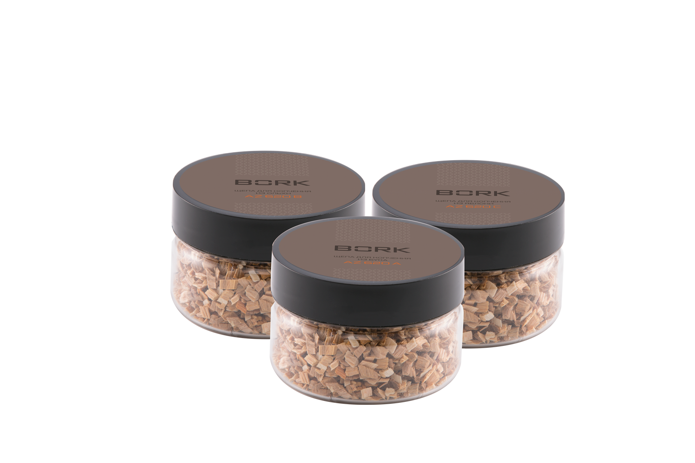
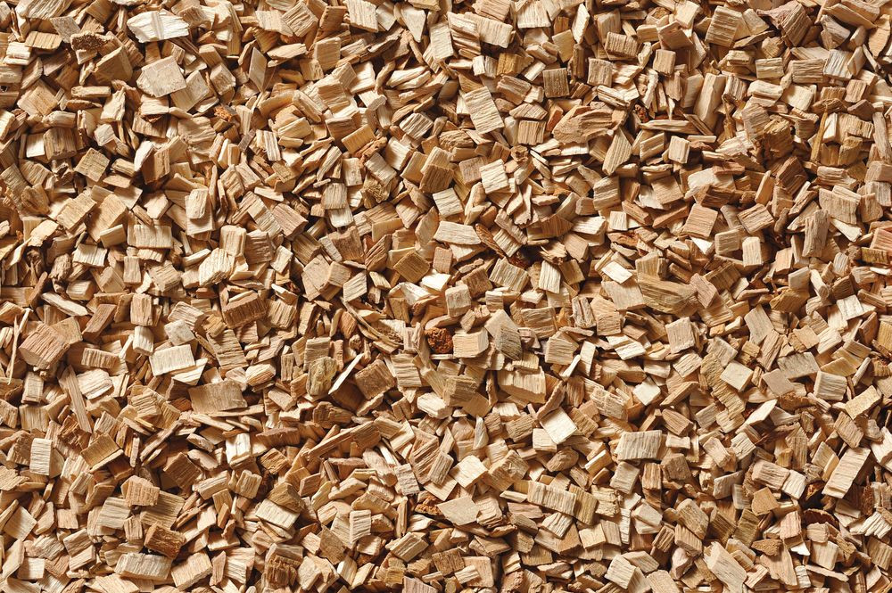
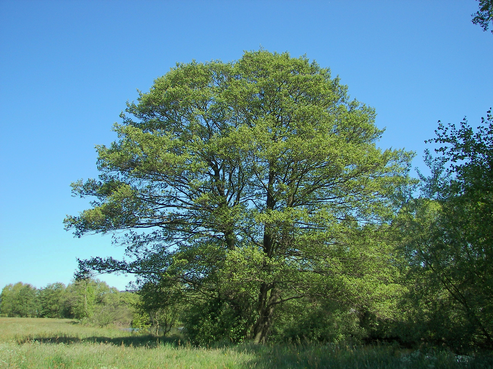

Щепа для копчения из ольхи AZ620B
Копчёные деликатесы — непременный атрибут застолья и просто вкусная еда. Всеми очень любимы копчёное мясо, колбаски, различные сорта рыбы и птицы. Дым, воздействуя на продукты, придаёт им оригинальный вкус и неповторимый аромат.
В некоторых странах до сих пор копчению подвергается пивной солод, ферментированный чай, орехи, сыр, перец Чили. Важно продукты, обработанные таким методом, сделать по-настоящему вкусными. Для этого нужно, чтобы щепа для копчения была правильно подобрана.
Вкус копчёного продукта зависит от многих факторов, в том числе от качества щепы и породы дерева.
Важным параметром является размер древесного материала, он влияет на равномерное образование дыма. Нельзя использовать очень мелкие опилки, огонь от их сгорания с высокой концентрацией углекислоты горит очень интенсивно. Копчёный продукт может иметь привкус гари.
Древесная щепа должна иметь соответствующую влажность (50–70%), слишком сухой материал сгорит быстро, без образования нужного количества дыма.
Щепа для копчения из ольхи AZ620B подготовлена особым образом, она специально высушена до необходимой влажности, что снижает количество вредных веществ в дыме.
Дым от ольховой щепы в отличие хвойных пород, которые имеют смолистые выделения, является абсолютно чистым без канцерогенов и примесей копоти. Это позволяет приобретать блюдам манящий аромат и неповторимый вкус.
Ольха идеальна для копчения мяса, птицы, рыбы и колбас.
Ольховый дым приятный на запах без токсичных образований, так как порода является экологически чистым материалом. Продукты приобретают особенную горчинку и терпкий копченый аромат.
